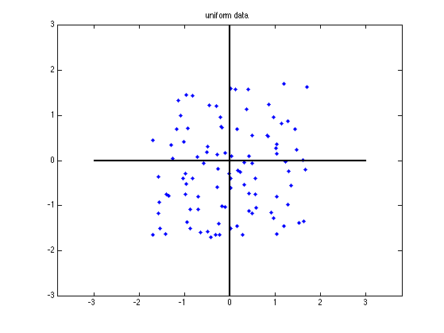
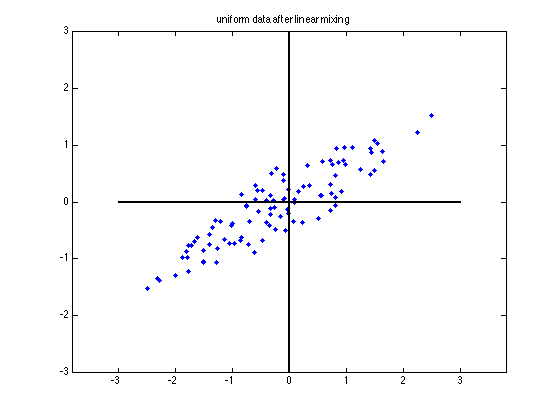
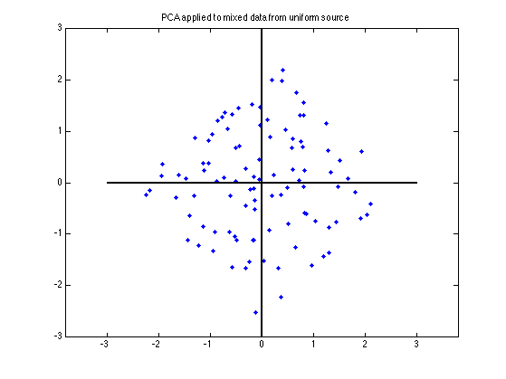
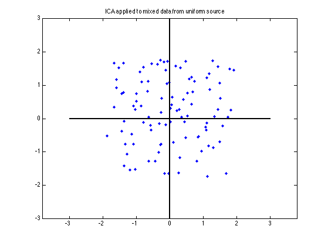

Contents
Comparing ICA and PCA on data from a 2d uniform distribution
setSeed(2);
N=100;
A=[2,3;2,1]*.3;
Uniform data
Suni=(rand(2,N)*2-1)*sqrt(3);
Xuni=A*Suni;
Vuni = fastica(Xuni,'only','white');
Shat = fastica(Xuni,'g','tanh','approach','symm');
cmax=3;
figure;
h1=plot(Suni(1,:),Suni(2,:),'.',[-cmax,cmax],[0,0],'k',[0,0],[-cmax,cmax],'k');
set(h1,'LineWidth',2);
set(h1,'MarkerSize',16);
axis equal;
title('uniform data')
printPmtkFigure('icaUniformSource')
figure;
h1=plot(Xuni(1,:),Xuni(2,:),'.',[-cmax,cmax],[0,0],'k',[0,0],[-cmax,cmax],'k');
axis equal;
set(h1,'LineWidth',2);
set(h1,'MarkerSize',16);
title('uniform data after linear mixing')
printPmtkFigure('icaUniformMixed')
figure;
h1=plot(Vuni(1,:),Vuni(2,:),'.',[-cmax,cmax],[0,0],'k',[0,0],[-cmax,cmax],'k');
axis equal;
set(h1,'LineWidth',2);
set(h1,'MarkerSize',16);
title('PCA applied to mixed data from uniform source')
printPmtkFigure('icaUniformPCA')
figure
h1=plot(Shat(1,:),Shat(2,:),'.',[-cmax,cmax],[0,0],'k',[0,0],[-cmax,cmax],'k');
axis equal;
set(h1,'LineWidth',2);
set(h1,'MarkerSize',16);
title('ICA applied to mixed data from uniform source')
printPmtkFigure('icaUniformICA')
Number of signals: 2
Number of samples: 100
Calculating covariance...
Dimension not reduced.
Selected [ 2 ] dimensions.
Smallest remaining (non-zero) eigenvalue [ 0.0659808 ]
Largest remaining (non-zero) eigenvalue [ 1.54907 ]
Sum of removed eigenvalues [ 0 ]
[ 100 ] % of (non-zero) eigenvalues retained.
Whitening...
Check: covariance differs from identity by [ 3.33067e-16 ].
Number of signals: 2
Number of samples: 100
Calculating covariance...
Dimension not reduced.
Selected [ 2 ] dimensions.
Smallest remaining (non-zero) eigenvalue [ 0.0659808 ]
Largest remaining (non-zero) eigenvalue [ 1.54907 ]
Sum of removed eigenvalues [ 0 ]
[ 100 ] % of (non-zero) eigenvalues retained.
Whitening...
Check: covariance differs from identity by [ 3.33067e-16 ].
Used approach [ symm ].
Used nonlinearity [ tanh ].
Starting ICA calculation...
Step no. 1
Step no. 2, change in value of estimate: 0.03
Step no. 3, change in value of estimate: 0.0662
Step no. 4, change in value of estimate: 0.00274
Convergence after 5 steps
Adding the mean back to the data.
   
Gaussian source
if 0
Sgauss=randn(2,N);
Sgauss=Sgauss.*(abs(Sgauss)<5);
Xgauss=A*Sgauss;
Vgauss = fastica(Xgauss,'only','white');
ShatGauss = fastica(Xgauss,'g','tanh','approach','symm');
figure
h1=plot(Sgauss(1,:),Sgauss(2,:),'.',[-cmax,cmax],[0,0],'k',[0,0],[-cmax,cmax],'k');
axis off; axis equal;
set(h1,'LineWidth',2);
set(h1,'MarkerSize',16);
title('gaussian data')
figure
h1=plot(Xgauss(1,:),Xgauss(2,:),'.',[-cmax,cmax],[0,0],'k',[0,0],[-cmax,cmax],'k');
axis off; axis equal;
set(h1,'LineWidth',2);
set(h1,'MarkerSize',16);
title('gaussian data after mixing')
figure
hold on
h1=plot(Vgauss(1,:),Vgauss(2,:),'.',[-cmax,cmax],[0,0],'k',[0,0],[-cmax,cmax],'k');
axis off; axis equal;
set(h1,'LineWidth',2);
set(h1,'MarkerSize',16);
title('gaussian data after whitening')
figure
h1=plot(ShatGauss(1,:),ShatGauss(2,:),'.',[-cmax,cmax],[0,0],'k',[0,0],[-cmax,cmax],'k');
axis equal; axis off;
set(h1,'LineWidth',2);
set(h1,'MarkerSize',16);
title('ica applied to mixed data from gaussian source')
end